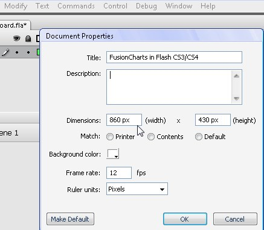
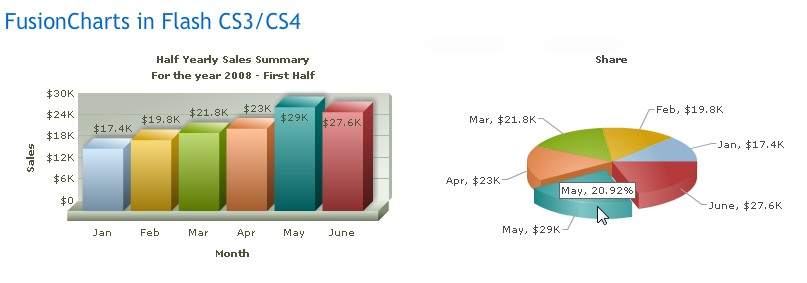

| FusionCharts and Flash > Using Flash CS3 or Flash CS4 | ||||||||||||||||||||||||||||||||||||||||||||||||||||||||||
|
FusionCharts can also be rendered in Flash CS3/CS4 movies. To render charts in Flash CS3/CS4 you would need to use the pre-compiled chart SWF files from FusionCharts for Flex pack. Flash needs to loads these chart SWF files into the movie using help of loader class (named as FusionCharts) that we've built. The loader class » (present in Download Pack PowerCharts v3 (core) > Code > FlashExamples > CS3CS4 > com > fusioncharts > components folder) is responsible for loading the charts, setting their properties like width, height, chart type, as well as passing data to the charts. Please note that not all charts present in PowerCharts v3.2 pack are available in FusionCharts for Flex. To get the list of available charts please read the list of available charts or visit FusionCharts for Flex Gallery. |
||||||||||||||||||||||||||||||||||||||||||||||||||||||||||
| Setting up | ||||||||||||||||||||||||||||||||||||||||||||||||||||||||||
|
To create a chart in Flash CS3/CS4, first of all you need to download the FusionCharts for Flex pack, get the chart SWF files from the Charts folder of the FusionCharts for Flex Download Pack. Once downloaded, you need to do the following:
 Once done, let's move to create a small sample showing half-yearly sales in two charts: |
||||||||||||||||||||||||||||||||||||||||||||||||||||||||||
|
We will create two charts, a Column chart and a Pie chart showing sales data. The sales data (we named it SalesData.xml) in FusionCharts recognizable data-format looks like the following :
<chart caption='Half Yearly Sales Summary' subcaption='For the year 2008 - First Half' xAxisName='Month' yAxisName='Sales' numberPrefix='$'> <set label='Jan' value='17400' /> <set label='Feb' value='19800' /> <set label='Mar' value='21800' /> <set label='Apr' value='23000' /> <set label='May' value='29000' /> <set label='June' value='27600' /> </chart> We keep the XML file in myCS3Chart folder. To make the pie chart look different we change the caption to "share" and save the file as a new XML file named - PieData.xml in the same folder. Thereafter, we will add the following code to the newly created Flash file's Layer 1:Frame 1 action: //Import the FusionCharts Loader class import com.fusioncharts.components.FusionCharts; /* * In this sample we will create two charts showing * half yearly sales data. The first chart is a Column * chart showing sales figures in column. The same sales figures * are showing in a pie chart to visualize the share of revenue */ //Instantiate FusionCharts class var ColumnSalesSummary:FusionCharts = new FusionCharts(); //Set relative path of chart SWF folder ColumnSalesSummary.FCFolder = "fusioncharts"; //Set chart type to Column3D ColumnSalesSummary.FCChartType = "Column3D"; //Set URL of data. You can also specify XML string here for the property FCDataXML, instead. ColumnSalesSummary.FCDataURL = "SalesData.xml"; //Set chart position, width and height ColumnSalesSummary.x = 25; ColumnSalesSummary.y = 50; ColumnSalesSummary.FCChartWidth = 400; ColumnSalesSummary.FCChartHeight = 240; //Call to render the chart ColumnSalesSummary.FCRender(); //Add chart to display hierarchy this.addChild(ColumnSalesSummary); //Create the pie chart now. Same process. //Instantiate FusionCharts class var sharedPie:FusionCharts = new FusionCharts(); //Set chart SWF folder sharedPie.FCFolder = "fusioncharts"; //Set chart type to pie sharedPie.FCChartType = "Pie3D"; //Set chart data URL sharedPie.FCDataURL = "PieData.xml"; //Set chart position, width and height sharedPie.x = 430; sharedPie.y = 50; sharedPie.FCChartWidth = 400; sharedPie.FCChartHeight = 240; //Render chart sharedPie.FCRender(); //Add chart to display hierarchy this.addChild(sharedPie); stop(); |
||||||||||||||||||||||||||||||||||||||||||||||||||||||||||
|
In the above code we have done the following:
Once published, the movie will load up in HTML with the charts like the image shown below. If the charts do not show up, please make sure the you've enabled Flash-JavaScript communication for the folder in which you've compiled the files. This is necessary as ExternalInterface is used to communicate with the charts.  Note that the movie won't load the charts when you use Test Movie option from Control menu of Flash. You need to Publish and then load the movie from the published HTML file or embed it in any HTML file. This is because ExternalInterface doesn't work in Test Movie mode. |
||||||||||||||||||||||||||||||||||||||||||||||||||||||||||
| Advanced Note: FusionCharts does not provide class files for Flash CS3/CS4. It comes only as a group of SWF files which need to be loaded inside Flash movie using FusionCharts loader class. | ||||||||||||||||||||||||||||||||||||||||||||||||||||||||||
| FusionCharts loader class Developer Reference | ||||||||||||||||||||||||||||||||||||||||||||||||||||||||||
| FusionCharts loader class provides the following properties, methods and events: | ||||||||||||||||||||||||||||||||||||||||||||||||||||||||||
| Properties | ||||||||||||||||||||||||||||||||||||||||||||||||||||||||||
|
||||||||||||||||||||||||||||||||||||||||||||||||||||||||||
| Methods | ||||||||||||||||||||||||||||||||||||||||||||||||||||||||||
|
||||||||||||||||||||||||||||||||||||||||||||||||||||||||||
| Events | ||||||||||||||||||||||||||||||||||||||||||||||||||||||||||
|
||||||||||||||||||||||||||||||||||||||||||||||||||||||||||
| List of charts from PowerCharts Pack available for Flash CS3/CS4 and Flex | ||||||||||||||||||||||||||||||||||||||||||||||||||||||||||
| Use the following available types of charts as FCChart property: | ||||||||||||||||||||||||||||||||||||||||||||||||||||||||||
|
||||||||||||||||||||||||||||||||||||||||||||||||||||||||||